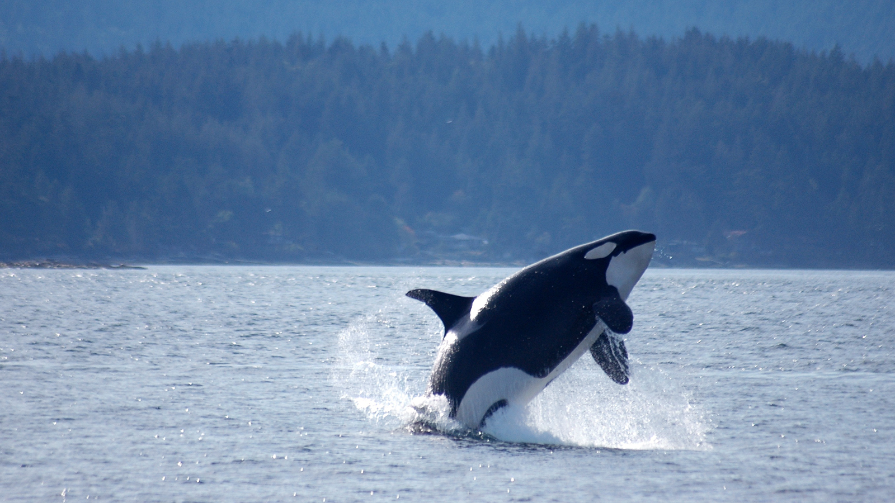

Orcas, or killer whales, are the largest of the dolphins and one of the world's most powerful predators. They feast on marine mammals such as seals, sea lions, and even whales, employing teeth that can be four inches long. They are known to grab seals right off the ice. They also eat fish, squid, and seabirds.
Though they often frequent cold, coastal waters, orcas can be found from the polar regions to the Equator.
Orcas hunt in deadly pods, family groups of up to 40 individuals. There appear to be both resident and transient pod populations of orcas. These different groups may prey on different animals and use different techniques to catch them. Resident pods tend to prefer fish, while transient pods target marine mammals. All pods use effective, cooperative hunting techniques that some liken to the behavior of wolf packs.